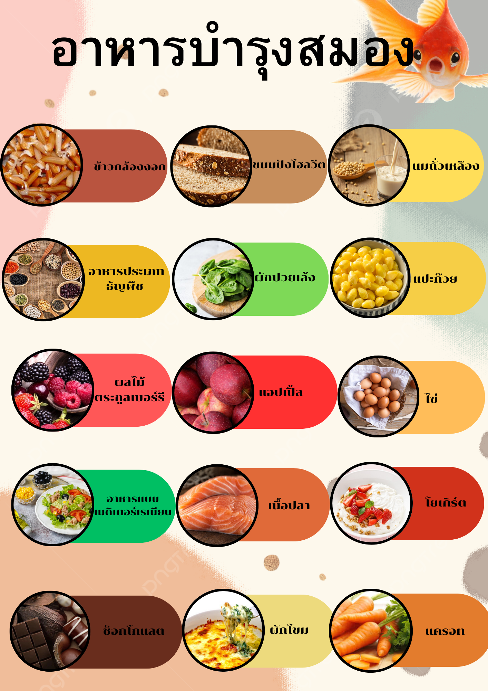

อาหารสำหรับบำรุงสมอง
ข้าวกล้องงอก ในข้าวกล้องงอกอุดมไปด้วยสาร GABA (กาบา) ซึ่งเป็นสารที่ช่วยบำรุงสมอง และรักษาโรคทางระบบประสาทต่าง ๆ โดยสารชนิดนี้มีอยู่มากในข้าวกล้องงอกถึง 15 เท่า เมื่อเปรียบเทียบกับข้าวกล้องแบบปกติทั่วไป อีกทั้งยังมีส่วนช่วยป้องกันสมองถูกทำลาย ซึ่งอาจเป็นสาเหตุของการเกิดโรคอัลไซเมอร์ในอนาคตได้
ขนมปังโฮลวีต ขนมปังโฮลวีทเป็นหนึ่งในอาหารบำรุงสมอง ซึ่งเป็นแหล่งพลังงานชั้นดีจากคาร์โบไฮเดรต และมีน้ำตาลน้อยกว่าขนมปังแบบปกติ จึงสามารถรับประทานทดแทนข้าวได้ นอกจากนี้ยังอุดมไปด้วยใยอาหารและจมูกข้าว ซึ่งไม่เพียงแค่ช่วยให้รู้สึกอิ่มเท่านั้น แต่ยังช่วยบำรุงสมอง โดยช่วยกระตุ้นให้สมองทำงานได้มีประสิทธิภาพอย่างต่อเนื่อง และยังมีส่วนช่วยให้มีสมาธิดีขึ้นอีกด้วย
อาหารประเภทธัญพืช โดยเฉพาะธัญพืชที่ไม่ผ่านการขัดสี เช่น เมล็ดงา เมล็ดดอกทานตะวัน จะยังคงคุณภาพของวิตามินเอและแมกนีเซียม ซึ่งเป็นสารที่ทำหน้าที่หล่อเลี้ยงสมองได้เป็นอย่างดี อีกทั้งยังเป็นแหล่งรวมของโปรตีน โอเมก้า และเส้นใยอาหารที่มีคุณภาพ ดังนั้น ธัญพืชจึงเป็นอีกหนึ่งอาหารบำรุงสมองที่ได้รับความนิยมมากที่สุด โดยเฉพาะการใช้เป็นส่วนประกอบสำคัญในอาหารมื้อเช้า หรือใช้หุงผสมกับข้าวกล้อง ก็จะช่วยเพิ่มคุณค่าทางโภชนาการในมื้ออาหารได้อีกรูปแบบหนึ่ง
เนื้อปลา เนื้อปลามีส่วนช่วยบำรุงสมองได้เป็นอย่างดี ด้วยกรดไขมันและโอเมก้า 3 ซึ่งทำหน้าที่เสริมสร้างผนังเซลล์ประสาทในสมองให้แข็งแรงขึ้น โดยเฉพาะปลาจากน้ำทะเลลึก เช่น ปลาทูน่า และปลาแซลมอน เป็นต้น
นมถั่วเหลือง นมถั่วเหลือง นอกจากจะมีส่วนช่วยต้านอนุมูลอิสระแล้ว ยังอุดมไปด้วยวิตามินบีและเลซิติน ซึ่งเป็นสารบำรุงสมอง ช่วยดูแลการทำงานของระบบประสาทและความจำ ลดความเสี่ยงของโรคอัลไซเมอร์ในผู้สูงอายุ นมถั่วเหลืองจึงเป็นอีกหนึ่งทางเลือกของอาหารช่วยบำรุงสมองได้
โยเกิร์ต คือหนึ่งในอาหารบำรุงสมองที่เป็นผลผลิตจากนม อุดมไปด้วยวิตามินและแร่ธาตุจำเป็นต่อร่างกาย ทั้งยังมีวิตามินบี 2 และวิตามินบี 12 ซึ่งมีส่วนช่วยในการบำรุงเม็ดเลือด ระบบประสาท และเยื่อหุ้มเซลล์สมองให้มีความยืดหยุ่น ซึ่งพบได้มากในกรีกโยเกิร์ตหรือโยเกิร์ตธรรมชาติ ที่ไม่ผ่านกระบวนการแต่งกลิ่นและรสชาติมากนัก
ผักปวยเล้ง จัดเป็นราชาแห่งผัก ด้วยเพราะคุณประโยชน์ของผักปวยเล้ง ที่มีส่วนช่วยบำรุงสมองได้เป็นอย่างดี อีกทั้งยังมีเอนไซม์ช่วยเสริมความแข็งแรงของเซลล์ประสาท เพิ่มประสิทธิภาพการทำงานของสมองได้ โดยนักวิจัยจาก Brigham and Women’s Hospital จากประเทศสหรัฐอเมริกา ได้ระบุถึงประโยชน์ของผักชนิดนี้ว่ามีส่วนช่วยในการชะลออาการสมองเสื่อมในคนสูงอายุได้
แปะก๊วย พืชสมุนไพรที่มีสรรพคุณช่วยรักษาโรคสมองเสื่อม หรืออาการหลงลืมที่เกิดจากความเสื่อมถอยของสมอง ซึ่งนอกจากประโยชน์ด้านการชะลอความเสื่อมทางสมองแล้ว แปะก๊วยยังช่วยเพิ่มการไหลเวียนของเลือดในสมอง จึงช่วยเพิ่มประสิทธิภาพและสมรรถภาพการทำงานของสมองได้เป็นอย่างดี
ผักโขม ผักโขม เป็นอาหารบำรุงสมองที่มีเอนไซม์ที่ช่วยเสริมสร้างความแข็งแรงให้เซลล์สมองและปลายเซลล์ประสาทจำนวนมาก นอกจากนั้น ผักโขมยังอุดมไปด้วยกรดโฟลิกที่เป็นประโยชน์ต่อการช่วยปกป้องความจำ คอยทำหน้าที่รักษาสมดุลน้ำในร่างกาย
แครอท แครอทมีสารลูทอีโอลิน (Luteolin) ช่วยลดความบกพร่องด้านความจำ หรือการอักเสบของสมองที่เกิดขึ้น ทั้งจากการที่อายุที่เพิ่มมากขึ้น หรือจากปฏิกิริยาที่ก่อให้เกิดความเสื่อมของสมอง อันมีสาเหตุมากจากไลฟ์สไตล์การใช้ชีวิตที่ไม่เหมาะสมหรือมีคุณภาพไม่เพียงพอ
ผลไม้ตระกูลเบอร์รี เป็นอาหารบำรุงสมองที่สำคัญอีกชนิดหนึ่ง ซึ่งนอกจากสรรพคุณทางด้านความงามและผิวพรรณแล้ว ผลไม้จำพวกเบอร์รียังมีส่วนช่วยป้องกันการสูญเสียความจำระยะสั้น ส่งเสริมประสิทธิภาพการเพิ่มจำนวนเซลล์ประสาทในส่วนของฮิปโปแคมปัส (Hippocampus) โดยตรง ช่วยบำรุงสมองได้เป็นอย่างดี
แอปเปิ้ล แอปเปิ้ลมีสารอะซีทิลโคลีน (Acetylcholine) ที่มีส่วนช่วยในการเพิ่มประสิทธิภาพการทำงานสารสื่อประสาท ซึ่งมีความสำคัญต่อระบบความจำและการเรียนรู้สิ่งใหม่ ๆ การรับประทานแอปเปิ้ลให้ได้อย่างน้อยวันละ 2 ลูก จึงมีส่วนช่วยในการปกป้องความทรงจำทั้งในระยะยาวและระยะสั้นได้
ไข่ ไข่ไก่เป็นอาหารอีกชนิดหนึ่งที่มีส่วนช่วยบำรุงสมอง ซึ่งเป็นที่ชื่นชอบของใครหลายคน โดยได้มีการค้นพบสารที่มีชื่อว่า โคลีน (Choline) ซึ่งเป็นสารสำคัญที่มีผลต่อการพัฒนาการทำงานของสมอง อีกทั้งยังเป็นสารจำเป็นต่อการสร้างเซลล์สมองใหม่
อาหารแบบเมดิเตอร์เรเนียน (Mediterranean diet) หรือการใช้น้ำมันมะกอกเข้ามาเป็นส่วนประกอบหลักในแต่ละมื้ออาหาร เพราะน้ำมันสกัดจากพืชจะมีโอเมก้า 3 ในปริมาณสูง ซึ่งเป็นสารที่มีประโยชน์ต่อสมอง จึงช่วยลดอาการสมองเสื่อมตามวัย หรือชะลอภาวะสมองเสื่อมก่อนวัยได้ ลองแทรกเมนูอาหารแต่ละสัปดาห์ให้เป็นแบบเมดิเตอร์เรเนียนดูบ้าง นอกจากจะได้ประโยชน์แล้ว ยังช่วยเพิ่มความสร้างสรรค์ให้อาหารแต่ละมื้อได้ดีอย่างแน่นอน
ช็อกโกแลต นับเป็นอีกหนึ่งอาหารช่วยบำรุงสมอง โดยเฉพาะดาร์กช็อกโกแลต ที่มีงานวิจัยจาก Loma Linda University รัฐแคลิฟอร์เนีย ประเทศสหรัฐอเมริกา ระบุว่าดาร์กช็อกโกแลตสามารถช่วยบำรุงสมอง เพิ่มการจดจำ และการเรียนรู้ได้ อีกทั้งยังช่วยลดภาวะความเครียดได้เป็นอย่างดี และนอกจากนั้น หากในดาร์กช็อกโกแลตมีส่วนผสมของพืชตระกูลถั่วที่เป็นแหล่งโปรตีน ไฟเบอร์ และไขมันดี เช่น อัลมอนด์ ฮาเซลนัท วอลนัท และแมคคาเมีย ก็ยิ่งมีส่วนช่วยเพิ่มคุณภาพความจำและกระบวนการคิด ด้วยวิตามินอีที่มีอยู่ในพืชตระกูลถั่วอีกด้วย
